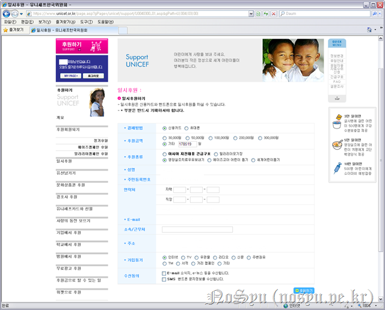
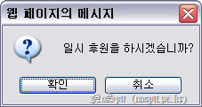
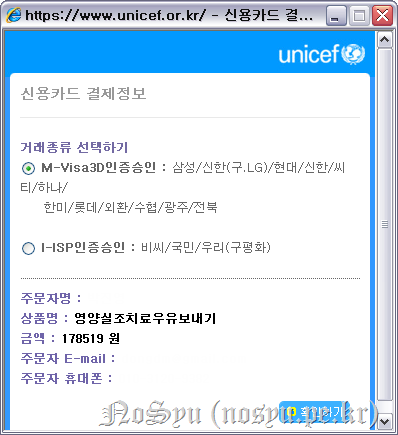
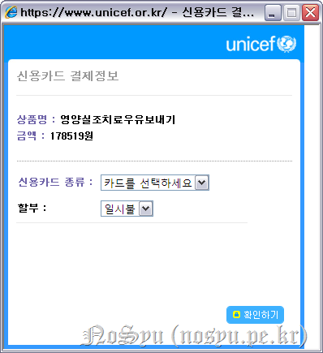
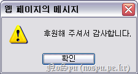
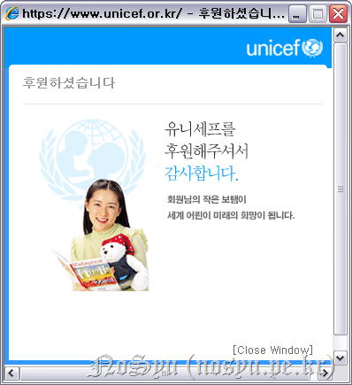
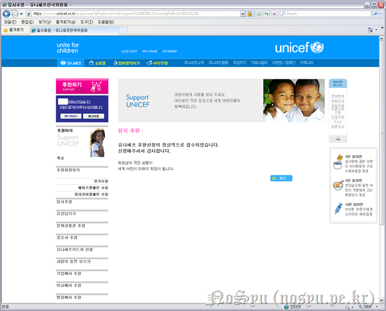
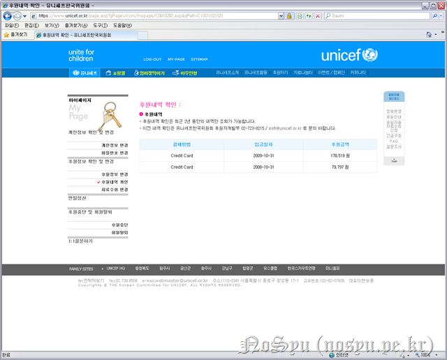

그 때도 돌고 돈 시계는 어김없이 돌고 돌아 다시 생일이 되었구나.
생일 축하한다.
이번에도 어김없이 기부를 해야겠지? 라고 글이 시작한다면 식상할까나?^^ 하지만 1년에 한 번 적는 것이니 그까짓 식상함 정도야 참을 수 있겠지.
이번에는 장학금도 있고 애드센스 수익금도 있고 애드클릭스 수입금도 있으니 기부금이 작년보다는 높겠구나. 작년에는 79797로 나름 재미있는 숫자가 나왔는데 이번에는 얼마인지 모르겠구나.
살펴보니 확실히 이번에는 작년보다 많구나. 2배는 훌쩍 넘었으니 말이야.
이번에는 어디에 기부를 할까 고민하였지만 결국 유니세프로 하기로 했다며? 종교적 색체도 약하고 믿을만한 곳이기 때문이지. 훗날 너의 바람대로 제대로 된 기부 단체, 재단이 만들어지기를 바랄게.
어디에 기부할까 살펴보니 긴급구호물자가 있네. 아시아, 태평양을 휩쓴 자연재해로부터 아이들을 지켜달라는 긴급구호 캠페인이 열리고 있어. 하지만 너는 기부를 하는 목표가 어린아이에게서 배고픔을 없애기 위해서였지.
따라서 이번에도 마찬가지로 영양실조치료우유보내기에 후원을 하기로 하였구나. 긴급구호에 참여하지 못해 아쉬움이 있지만 후원 종류에 맞춰 후원을 할지 모르는 상황이기에 정말로 긴급하다면 그곳에 쓸 수 있겠다는 너의 생각을 믿어. 다만, 그렇게 사용되면서 너의 기부금이 개인적인 용도나 비자금에 사용되지 않기를 바라는 너의 생각에도 공감하고 있어.

이번에는 확실히 기부금이 많구나. 178,519원. 여전히 작은 돈이지만 작년보다는 많아졌다는 것에 1년 동안 열심히 살았다는 증거가 되는 것처럼 보여 좋구나.

역시 같은 메시지가 뜨는구나.


후원금을 확인한 너는 여섯 자리에 놀랐다며? 뭘 그 정도로... 다음에는 일곱 여덟 자리는 되도록 하자구나. 그렇게 크게 자라는거야.



그렇게 후원을 하고 나니 여러 메시지로 후원이 진행되었다는 얘기를 하는구나.

작년 생일에 했던 기부가 같이 적혀있는 후원내역을 보면서 앞으로 이것이 매년 생일 때마다 잊지 않고 쌓이기를 바랄게.
다시 한 번 생일 축하하며 더 큰 사람이 되어 더 많은 사람에게 도움을 줄 수 있기를 바랄게. 비록 어린아이가 아닌 너이지만 꾸준히 성장하고 성장하기를 나는 바라고 있어.
대학 졸업까지... 482일...
NoSyu가 태어난지 8767일 되는 날에...